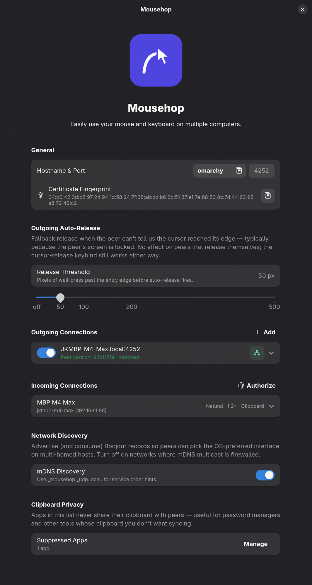

One mouse. One keyboard. Every machine.
Mousehop is an open-source software KVM — glide a single cursor, keyboard, and clipboard across your Linux, macOS, and Windows machines over the local network. No KVM hardware, no cloud.
The name is the whole pitch — your mouse, hopping from screen to screen.
Mousehop is a fork of lan-mouse, Ferdinand Schober's fast, encrypted, cross-platform input-sharing daemon. It keeps that Rust-native core intact and builds on top.
What this fork adds on top of lan-mouse.
A proper menu-bar app — no Dock clutter. A native prompt when you grant Accessibility, a TCC watcher that reacts the instant permissions change, and display-wake so a hop from another machine lights the screen back up.
A real Linux StatusNotifierItem tray icon with a purpose-built glyph, plus the macOS menu-bar item. Closing the window tucks Mousehop away instead of quitting — the daemon keeps running.
Bi-directional clipboard text sync between paired machines — off by
default, gated per pair and direction. An app-suppression list keeps
password managers off the wire; on macOS, ConcealedType
clipboards are blocked automatically.
Hold a key and the forwarded repeats follow the receiving machine's own keyboard settings — initial delay and rate — instead of one fixed speed. Change the sliders and it tracks them live.
Reconnects cleanly after a machine sleeps and wakes, and re-reads screen geometry when you attach or unplug a monitor, so the crossing edges stay where you put them.
For a peer with several addresses, choose how Mousehop connects: Auto races every address, Fastest locks onto the lowest-latency one, or pin a specific IP per network. Works over IPv4 or IPv6 dual-stack.
Record your own hotkey in Preferences to release captured input and snap the cursor back to the host machine.
Mousehop suppresses edge crossings while the host's screen is locked, so a locked Mac or PC never swallows your cursor.
Your cursor keeps its cross-axis position when it crosses to another machine, with wall-press auto-release and host-cursor warp-back.
mDNS-SD primary-IP hints, Bonjour name normalization, exponential dial backoff, and one DTLS listener per local address — connecting just works on real networks.
Linked machines trade build versions and the UI soft-warns when they drift apart, so a mismatch is obvious before it bites.
Set natural-scroll direction and pointer sensitivity independently for each connected machine, right from its connection row.
The foundation Mousehop inherits — every bit of it still works.
Share one mouse and keyboard across Linux (Wayland), Windows, and macOS. A software KVM switch — no extra hardware.
All traffic runs over DTLS (via WebRTC.rs); machines authorize each other by TLS-certificate fingerprint.
A native GTK + libadwaita frontend for managing connections, plus a CLI and a headless daemon mode for systemd.
wlroots layer-shell, libei, the xdg remote-desktop portal, Windows, and macOS — chosen automatically for your compositor.
Machines find each other on the local network by hostname — no manual IP wrangling required.
A fast, memory-safe, single-binary core that stays maintainable enough to keep growing new backends.
Mousehop runs on Linux (Wayland), macOS, and Windows. Native binaries, Flatpak, AUR, crates.io, and Nix — pick what fits your setup.
Download the .dmg from the releases page and drag Mousehop into Applications. Signed with a Developer ID and notarized by Apple, so Gatekeeper opens it without a detour. Grant Accessibility when prompted — Mousehop lives in the menu bar.
Download.dmgDownload the .zip from the releases page and extract anywhere. Run
mousehop.exe. The Windows build isn't signed yet, so
SmartScreen may prompt on first launch.
Universal — works on any distro. Download
mousehop.flatpak from the latest release, then sideload.
flatpak install --user mousehop.flatpakThree variants: mousehop (source build),
mousehop-bin (prebuilt binary), or
mousehop-git (latest from main).
paru -S mousehopPrebuilt x86_64 and aarch64 tarballs ship with
every release — for distros without an AUR or Flatpak path.
One command from crates.io. Requires a Rust toolchain — and on Linux, GTK4 + libadwaita headers.
cargo install mousehopBuild directly from the flake — the executable lands in
result/bin/mousehop.
nix build github:jondkinney/mousehopClone the repo and build with Cargo. See the README for per-distro dependency lists.
git clone https://github.com/jondkinney/mousehop
cd mousehop
cargo build --release
Migrating from lan-mouse? Mousehop reads its own config at
~/.config/mousehop/ and speaks its own wire protocol, so the
two install and run side by side without interfering.
Link two machines in about a minute.
Put it on every computer you want to share input between — Linux, macOS, or Windows.
On the controlling device, click Add and enter the other machine's hostname and which edge it sits on.
On the other machine, Authorize the incoming device by its fingerprint — shown in the General section of the sender.
Push your cursor at the screen edge toward the other machine — the keyboard and clipboard (if enabled) follow.
If a peer doesn't appear after a moment, the receiving machine's firewall is almost certainly the cause — Linux usually needs an explicit rule, while macOS and Windows prompt on first launch. See Firewall setup for per-OS instructions.